Extras: Steady-State Error
Contents
Steady-state error is defined as the difference between the input (command) and the output of a system in the limit as time goes to infinity (i.e. when the response has reached steady state). The steady-state error will depend on the type of input (step, ramp, etc.) as well as the system type (0, I, or II).
Note: Steady-state error analysis is only useful for stable systems. You should always check the system for stability before performing a steady-state error analysis. Many of the techniques that we present will give an answer even if the error does not reach a finite steady-state value.
Calculating steady-state errors
Before talking about the relationships between steady-state error and system type, we will show how to calculate error regardless of system type or input. Then, we will start deriving formulas we can apply when the system has a specific structure and the input is one of our standard functions. Steady-state error can be calculated from the open- or closed-loop transfer function for unity feedback systems. For example, let's say that we have the system given below.
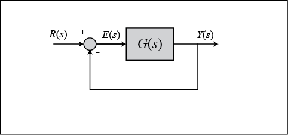
This is equivalent to the following system, where T(s) is the closed-loop transfer function.

We can calculate the steady-state error for this system from either the open- or closed-loop transfer function using the Final Value Theorem. Recall that this theorem can only be applied if the subject of the limit (sE(s) in this case) has poles with negative real part.
(1)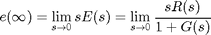
(2)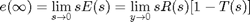
Now, let's plug in the Laplace transforms for some standard inputs and determine equations to calculate steady-state error from the open-loop transfer function in each case.
- Step Input (R(s) = 1 / s):
(3)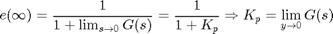
- Ramp Input (R(s) = 1 / s^2):
(4)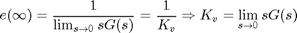
- Parabolic Input (R(s) = 1 / s^3):
(5)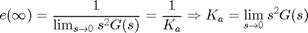
When we design a controller, we usually also want to compensate for disturbances to a system. Let's say that we have a system with a disturbance that enters in the manner shown below.
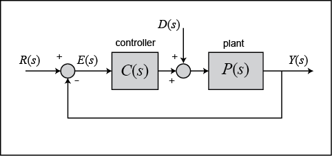
We can find the steady-state error due to a step disturbance input again employing the Final Value Theorem (treat R(s) = 0).
(6)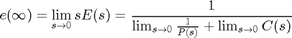
When we have a non-unity feedback system we need to be careful since the signal entering G(s) is no longer the actual error E(s). Error is the difference between the commanded reference and the actual output, E(s) = R(s) - Y(s). When there is a transfer function H(s) in the feedback path, the signal being substracted from R(s) is no longer the true output Y(s), it has been distorted by H(s). This situation is depicted below.

Manipulating the blocks, we can transform the system into an equivalent unity-feedback structure as shown below.
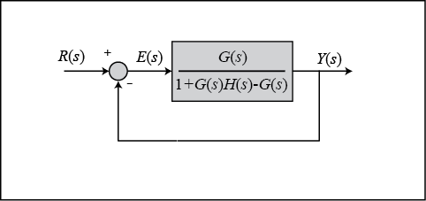
Then we can apply the equations we derived above.
System type and steady-state error
If you refer back to the equations for calculating steady-state errors for unity feedback systems, you will find that we have defined certain constants (known as the static error constants). These constants are the position constant (Kp), the velocity constant (Kv), and the acceleration constant (Ka). Knowing the value of these constants, as well as the system type, we can predict if our system is going to have a finite steady-state error.
First, let's talk about system type. The system type is defined as the number of pure integrators in the forward path of a unity-feedback system. That is, the system type is equal to the value of n when the system is represented as in the following figure. It does not matter if the integrators are part of the controller or the plant.
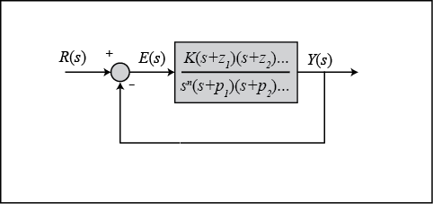
Therefore, a system can be type 0, type 1, etc. The following tables summarize how steady-state error varies with system type.
| Type 0 system | Step Input | Ramp Input | Parabolic Input |
|---|---|---|---|
| Steady-State Error Formula | 1/(1+Kp) | 1/Kv | 1/Ka |
| Static Error Constant | Kp = constant | Kv = 0 | Ka = 0 |
| Error | 1/(1+Kp) | infinity | infinity |
| Type 1 system | Step Input | Ramp Input | Parabolic Input |
|---|---|---|---|
| Steady-State Error Formula | 1/(1+Kp) | 1/Kv | 1/Ka |
| Static Error Constant | Kp = infinity | Kv = constant | Ka = 0 |
| Error | 0 | 1/Kv | infinity |
| Type 2 system | Step Input | Ramp Input | Parabolic Input |
|---|---|---|---|
| Steady-State Error Formula | 1/(1+Kp) | 1/Kv | 1/Ka |
| Static Error Constant | Kp = infinity | Kv = infinity | Ka = constant |
| Error | 0 | 0 | 1/Ka |
Example: Meeting steady-state error requirements
Consider a system of the form shown below.
For this example, let G(s) equal the following.
(7)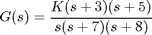
Since this system is type 1, there will be no steady-state error for a step input and there will be infinite error for a parabolic input. The only input that will yield a finite steady-state error in this system is a ramp input. We wish to choose K such that the closed-loop system has a steady-state error of 0.1 in response to a ramp reference. Let's first examine the ramp input response for a gain of K = 1.
s = tf('s'); G = ((s+3)*(s+5))/(s*(s+7)*(s+8)); T = feedback(G,1); t = 0:0.1:25; u = t; [y,t,x] = lsim(T,u,t); plot(t,y,'y',t,u,'m') xlabel('Time (sec)') ylabel('Amplitude') title('Input-purple, Output-yellow')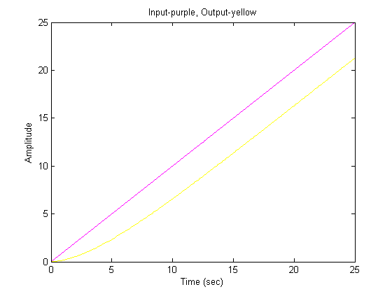
The steady-state error for this system is quite large, since we can see that at time 20 seconds the output is approximately 16 as compared to an input of 20 (steady-state error is approximately equal to 4). Let's examine this in further detail.
We know from our problem statement that the steady-state error must be 0.1. Therefore, we can solve the problem following these steps:
(8)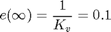
(9)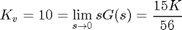
(10)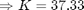
Let's see the ramp input response for K = 37.33 by entering the following code in the MATLAB command window.
K = 37.33 ; s = tf('s'); G = (K*(s+3)*(s+5))/(s*(s+7)*(s+8)); sysCL = feedback(G,1); t = 0:0.1:50; u = t; [y,t,x] = lsim(sysCL,u,t); plot(t,y,'y',t,u,'m') xlabel('Time (sec)') ylabel('Amplitude') title('Input-purple, Output-yellow')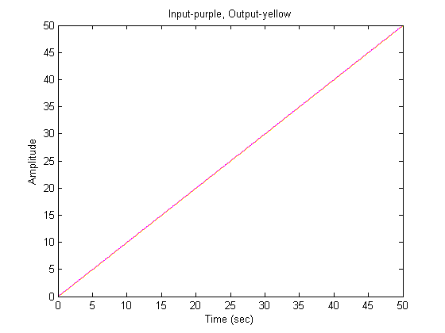
In order to get a better view, we must zoom in on the response. We choose to zoom in between time equals 39.9 and 40.1 seconds because that will ensure that the system has reached steady state.
axis([39.9,40.1,39.9,40.1])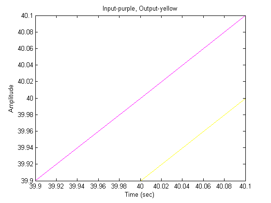
Examination of the above shows that the steady-state error is indeed 0.1 as desired.
Now let's modify the problem a little bit and say that our system has the form shown below.
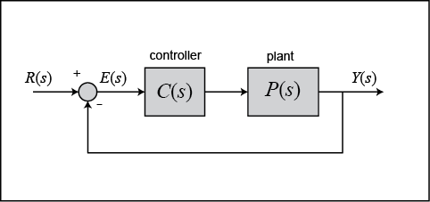
In essence we are no distinguishing between the controller and the plant in our feedback system. Now we want to achieve zero steady-state error for a ramp input.
From our tables, we know that a system of type 2 gives us zero steady-state error for a ramp input. Therefore, we can get zero steady-state error by simply adding an integrator (a pole at the origin). Let's view the ramp input response for a step input if we add an integrator and employ a gain K = 1.
s = tf('s'); P = ((s+3)*(s+5))/(s*(s+7)*(s+8)); C = 1/s; sysCL = feedback(C*P,1); t = 0:0.1:250; u = t; [y,t,x] = lsim(sysCL,u,t); plot(t,y,'y',t,u,'m') xlabel('Time (sec)') ylabel('Amplitude') title('Input-purple, Output-yellow')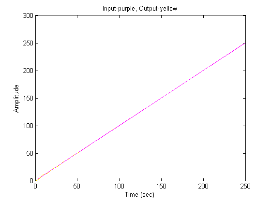
As you can see, there is initially some oscillation (you may need to zoom in). However, at steady state we do have zero steady-state error as desired. Let's zoom in around 240 seconds (trust me, it doesn't reach steady state until then).
axis([239.9,240.1,239.9,240.1])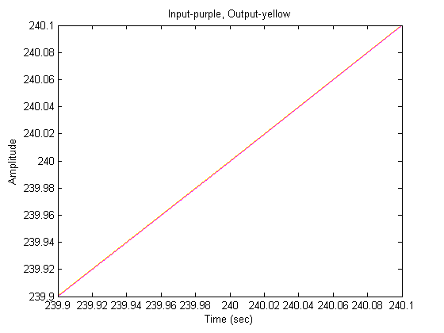
As you can see, the steady-state error is zero. Feel free to zoom in on different areas of the graph to observe how the response approaches steady state.